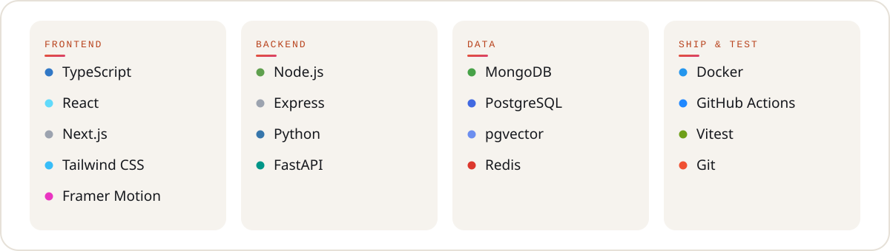

Hey, I'm Siddique 👋
I'm a full-stack developer building tools for the people most software forgets: first-time form fillers, people who would rather speak than type, and anyone who doesn't read English first. My work sits where TypeScript frontends, Node and Python backends, and LLMs meet.
|
Right now
|
What I'm building
 
Toolbox

Got an idea, a bug, or a form that makes no sense? Open an issue on any repo, I read them all.